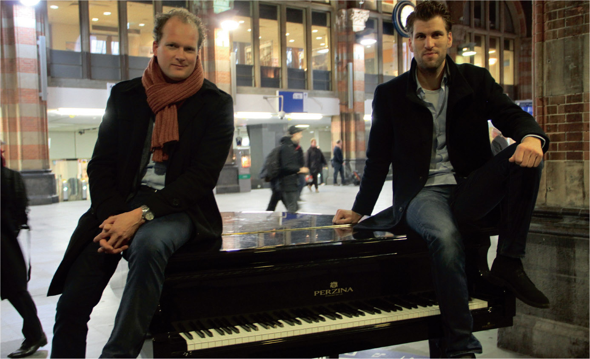

ARTIKEL NS STATIONPIANO'S IN 'PIANIST' MAGAZINE
< Terug >In de nieuwste uitgave van het het magazine ‘Pianist’ is nu een artikel te vinden over de bekend geworden Station piano’s en vleugels op vele NS stations in Nederland. In dit artikel genaamd ‘Piano als interactief tijdverdrijf’ wordt ingegaan op het succes van dit idee met Bart Deddens van Royal HaskoningDHV en Bart Elbers van Bol Piano’s als initiatiefnemers en leveranciers van de Station vleugels. Kom langs bij Bol Piano's & Vleugels voor een gratis exemplaar van dit blad speciaal gemaakt voor pianisten en pianoliefhebbers.